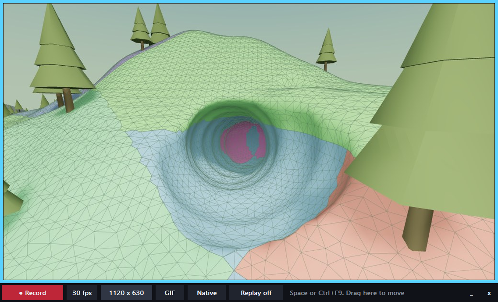
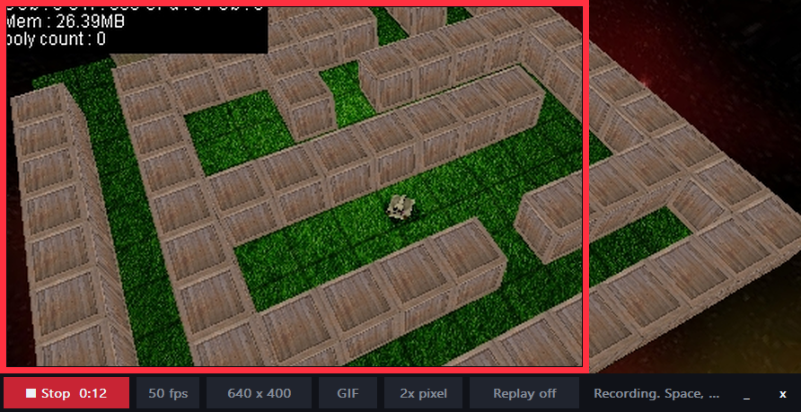
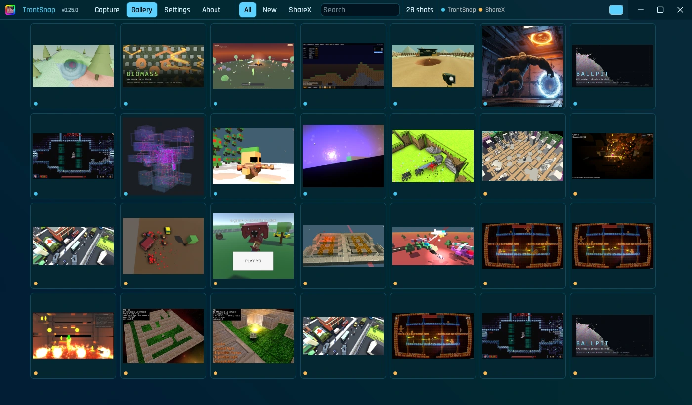
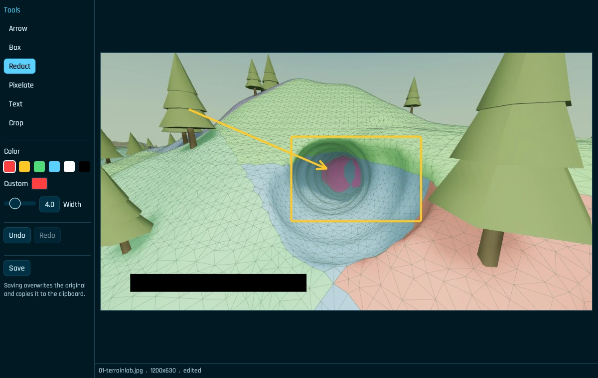
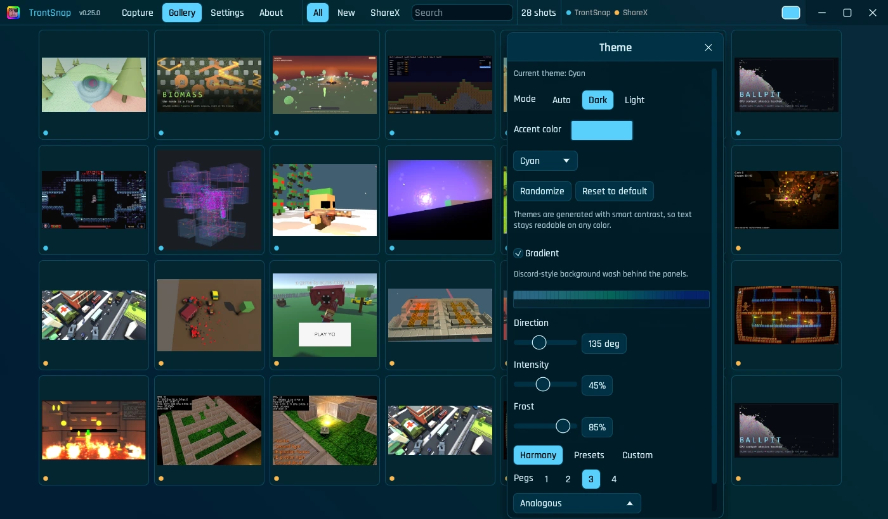
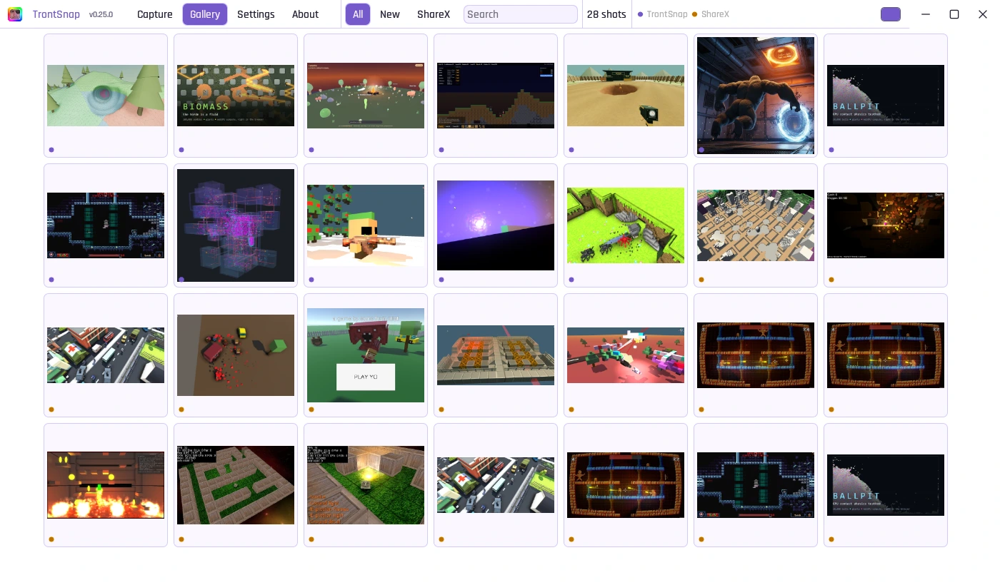

Screenshots + GIFs for people who make games.
Drop a frame over your game, hit Ctrl+F9, and a GIF is on your clipboard before you've alt-tabbed to Discord. PrtSc still does what PrtSc should, and every shot you've ever taken lives in one searchable gallery.
This whole page runs on the same colormagic engine as the app's theme window. and break it; the text stays readable.

Built for devlogs
The recorder is its own tiny window, not a settings maze. Size it to the bit of the game worth showing, pick fps + format, record. GifCam energy with the stuff gamedevs actually ask for.
- GIF, MP4 or WEBM10 to 60 fps. Capture is hardware H.264; GIF and WEBM come out of an ffmpeg pass after you stop, so the take never drops frames. One palette per clip keeps GIFs small and shimmer-free.
- Instant replayTurn on Replay and the frame is buffered as you play. Ctrl+F10 saves the last 15, 30, 60 or 120 seconds, so the cool physics bug you weren't recording still makes it to the devlog.
- Pixel-perfect 2x / 3x / 4xNearest-neighbor upscaling for pixel art, or scale down to 50%, 720p or 480p for Discord's upload cap.
- Exact sizesPresets from 320x240 to 1080p, snap to any open window (your Unity Game view, a Godot run), or nudge with the arrow keys 1 px at a time.
- Works minimizedCtrl+F9 starts and stops from anywhere, even with the cam window tucked away. Space or Enter works when it has focus.

# same pipeline, no window: handy for build scripts and CI captures
trontsnap rec --monitor 1 --secs 8 --fps 30 --format gif --scale 50%
trontsnap rec --rect 0,0,1280,720 --format webm
trontsnap cam --size 800x600 --format gif
Asked for by André and aFoolsDuty in the spicy-dev channel on the nativepixels Discord. Their wishlist became the spec.
And the rest of it
TrontSnap started as my ShareX replacement, so the screenshot side is all there: freeze-frame region picking with a zoom loupe, offline OCR, an annotation editor, and a gallery that stays fast with years of history in it.




The keys
All rebindable in Settings. The PrtSc combos work from the tray; the F9 + F10 ones belong to the recorder frame.
Grab it
One portable exe: no installer, no admin, no reboot. Run it and it lives in the tray; the About tab has a one-click setup for Desktop + Start menu shortcuts (TrontSnap and TrontSnap Cam) and start at login. Uninstall by deleting the file.
GIF + WEBM use ffmpeg if it's on your PATH (winget install ffmpeg). Without it you still get MP4, plus a built-in GIF encoder.
Want PrtSc to work over admin windows too? The release ZIP has an installed mode with a small signed hotkey helper; the setup guide walks through it.